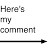
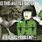

YouTube User: Jonathan Dahlberg
If you're waiting for the waiter, does that make you the waiter?
YouTube User: Killyourbabydoll
Isn't it more immoral to eat plants than to eat animals since plants can't fight back in any way??
YouTube User: Ian O'Shea
What happens if you get scared half to death twice

YouTube User: The Shame Botter
If the opposite of pro is con, doesn't that mean that the opposite of progress is Congress?
/music starts to play, but the government turns it off as I get dragged to jail, because in this day you cannot speak out against the government....?